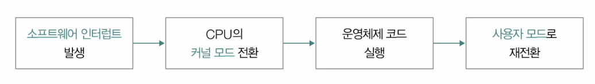
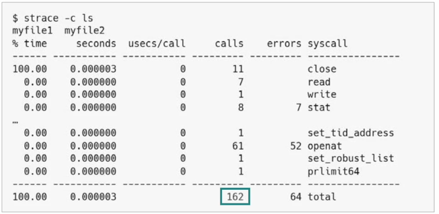

시스템 콜(System Call)이란 무엇인지, 왜 필요한지 한두 줄로 설명해 봐. 키워드 후보: 응용 프로그램, 운영체제, 자원, 권한
⚙️ Stage 2 / 5 · 시스템 콜 처리 4단계
호출되었을 때 일어나는 4단계를 순서대로 (각 10pt × 4)
응용 프로그램이 시스템 콜을 호출하면, CPU와 OS 내부에서 어떤 흐름이 일어나는지 순서대로 4단계로 적어봐.
1️⃣
2️⃣
3️⃣
4️⃣
🔐 Stage 3 / 5 · 사용자 모드 vs 커널 모드
두 모드의 차이를 정리 (각 5pt × 6)
이중 모드(dual mode)의 핵심은 두 모드가 무엇을 할 수 있고 없는지 구분된다는 것.
빈칸을 채워봐.
🔴 사용자 모드
🔵 커널 모드
🎯 Stage 4 / 5 · 종합 사고
개념 응용 (각 10pt × 2)
Q1. 만약 이중 모드가 없다면 (= 모든 코드가 같은 권한으로 실행) 어떤 문제가 생길까? 한 가지 시나리오를 들어봐.
Q2.hello world 한 줄 출력에도 시스템 콜이 수백 번 호출된다고 한다.
그렇다면 시스템 콜이 잦을수록 성능에 미치는 영향은? 왜 그럴까?
✨ Stage 5 / 5 · 정답 공개 + 깊이 보충
책 정답 + 실제로는 더 정교한 부분 보충
📌 시스템 콜 처리 4단계 (책 정답)
1️⃣ 소프트웨어 인터럽트 발생
2️⃣ 커널 모드로 전환
3️⃣ 운영체제 코드 실행
4️⃣ 사용자 모드로 재전환

📌 사용자 모드 vs 커널 모드
🔴 사용자 모드
🔵 커널 모드
코드 영역
사용자 영역
커널 영역
OS 서비스
받을 수 없음
받을 수 있음
자원 접근 명령
실행 안 함
모든 명령 실행 가능

📌 핵심 한 줄
운영체제는 커널 모드로 실행되기 때문에 자원에 접근할 수 있다.
반대로 사용자 모드는 실수로라도 자원에 접근할 수 없다.
모드 구분은 플래그 레지스터의 슈퍼바이저 플래그로 식별.
⚠️ 책 표현 보완 #1: "소프트웨어 인터럽트"
전통적 x86에서는 int 0x80 같은 명령으로 인터럽트를 발생시켰지만,
현대 x86_64 Linux는 dedicated syscall / sysret 명령어를 쓴다.
이는 인터럽트가 아니라 전용 trap 명령으로, IDT 조회를 건너뛰고 MSR(Model Specific Register)에 미리 등록된 핸들러로 점프 → 훨씬 빠름.
개념적으로는 "인터럽트 같은" 흐름이지만 실제 메커니즘은 다르다.
⚠️ 책 표현 보완 #2: "슈퍼바이저 플래그"
이건 일부 아키텍처(M68k 등)의 표현이고, x86/x86_64에서는 그런 단일 플래그가 없다.
실제로는 CS(Code Segment) 레지스터 하위 2비트의 CPL (Current Privilege Level)로 판별 — 0이면 커널, 3이면 사용자.
(Ring 0 / Ring 3 라는 표현이 여기서 나옴)
⚠️ 책 표현 보완 #3: "hello world에 시스템 콜 600회"
이 숫자는 환경 의존적이다:
순수 C 정적 링크: 약 3~5회 (write, exit_group 등)
C 동적 링크 (보통의 컴파일): 약 25~40회 (mmap, openat, read 등 dynamic linker 동작)
Python print("hello"): 수백~천 회 (인터프리터 시작 + 모듈 import)
직접 확인: strace -c ./hello
🔍 깊이 보충: 이중 모드의 진짜 보호 대상
책은 "자원 접근"으로 단순화했지만, 커널 모드만 할 수 있는 것은 더 다양하다:
특권 명령: HLT, IN/OUT, LGDT, MOV CR3 (페이지 테이블 변경) 등
커널 메모리 영역 접근 (페이지 테이블 권한 비트로 분리)
인터럽트 마스킹/허용 (CLI, STI)
I/O 포트 접근
현대 OS는 여기에 더해 SMEP/SMAP (커널이 사용자 메모리를 실수로 실행/읽기 차단), KPTI (Meltdown 대응) 같은 추가 보호 layer를 둔다.
🔍 깊이 보충: 시스템 콜의 비용
시스템 콜은 모드 전환만이 아니라:
사용자 레지스터 저장 → 커널 스택 전환
커널 진입 시 보안 검증 (인자, 포인터 유효성)
CPU 캐시/TLB 일부 무효화 가능 (KPTI 환경)
핸들러 실행 후 다시 사용자 레지스터 복구
이 비용을 줄이려고 등장한 게 vDSO (시간 조회 같은 단순 syscall은 커널 진입 없이 사용자 공간에서 처리), io_uring (배치/비동기 syscall) 같은 메커니즘.
💡 한 문장 요약
이중 모드는 "프로그램이 OS의 특권을 빌릴 때만, 시스템 콜이라는 통제된 입구를 거치도록 강제하는 보호 메커니즘"이다.